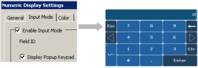
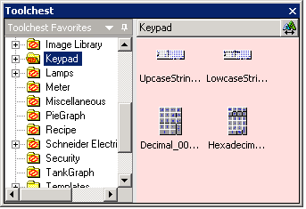
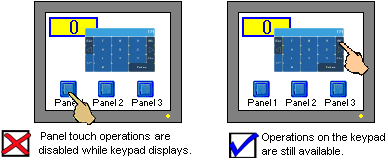
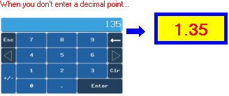
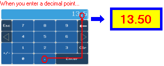
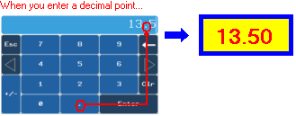
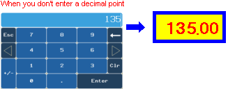

|
|
|
|
|
|
|
|
This section describes the different types of keypads and keypad input methods available in Vijeo-Designer.
|
|
|
UNINTENDED EQUIPMENT OPERATION When you connect one or more USB devices to a target machine via a USB hub, you must use a USB hub with external power supply. Failure to follow these instructions can result in death, serious injury, or equipment damage. |
There are three types of keypads:
System Keypads. The shape of the Keypad is fixed, depending on the Data Display's data type. For more information on system keypads, see Section 11.9.2, Types of System Keypads.

Toolchest Keypads. You can select a keypad from the Keypad folder in the Toolchest.

Custom Keypads. You can create your own customized keypad. For more information, see Section 11.9.5, Using Custom Keypads.
USB Keyboard and USB Mouse. You can connect a USB keyboard and USB mouse to a target machine's USB port to input data. This method is necessary when you do not have access to the target machine and its touch capability. For example, the target machine is encased to protect it from water damage or other environmental factors. For information on how to set up the USB keyboard and USB mouse, see Section 4.5.1, Target Properties.
Use a popup keypad that displays when you click the data display area. For more information, see Section 11.9.3, Using a Popup Keypad.

While a popup keypad is displaying, only touch operations on the popup keypad can be performed. Panel touch operations and hardware function key operations are disabled while the popup keypad displays.

Once the popup keypad closes, panel touch operations and hardware function key operations return to normal. Press either Enter or ESC on the popup keypad to close the popup keypad.

If a popup keypad appears while the Active Event Viewer is displaying, the Show Event Log Viewer icon is disabled. Move Top/Bottom icon and the Close icon are still enabled. Once the popup keypad closes, icon operations return to normal. See Section 28.1.1, Active Error Viewer.
You can set up how you want the decimal point to display on Data Display or Value animation. In the Property Inspector for a target, select Fixed or Floating in the Keypad Decimal Point property. The Numeric Displays in the examples below have their display digits set to 4.2. See Section 11.2.1, General Tab for information on display digits.
Fixed: The number of decimal places is fixed to the number of places defined. For example, if you type 135, and the number of decimal places is 2, the Numeric Display displays 1.35


Floating: The decimal point is floating. For example, if you type 13.5, and the number of decimal places is 2, the Numeric Display displays 13.50.

